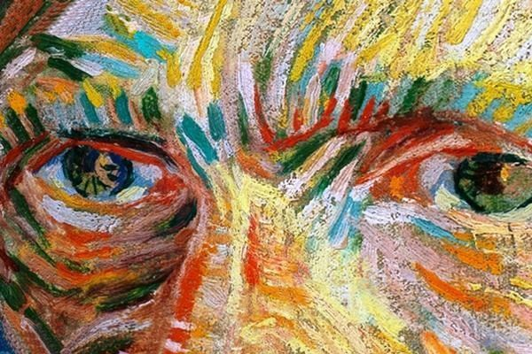
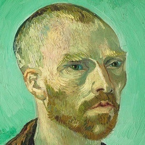
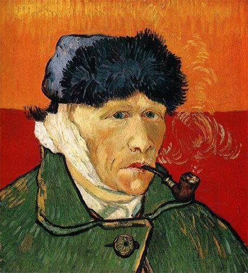
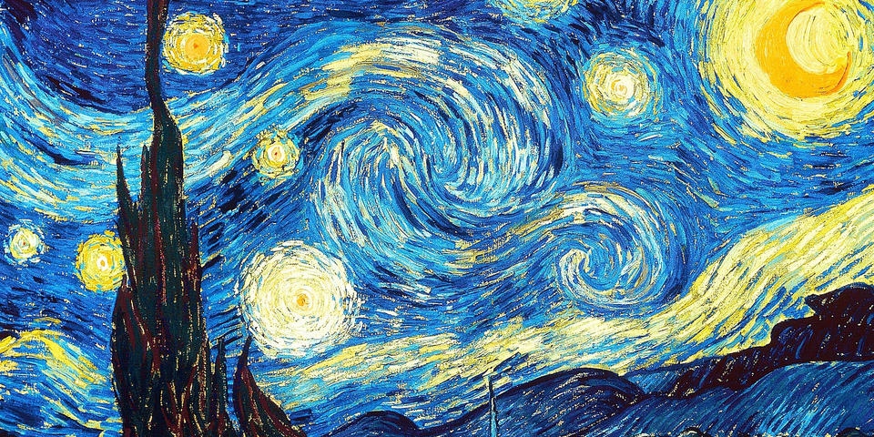

GALLERY
VICENT VAN GOGH
Vicent Van Gogh
Pintor holandés
"sueño con mi pintura y pinto mi sueño"
FAMILIA

Vicent Van Gogh, nacido el 30 de marzo de 1853 en Groot-Zunder, fue hijo de Anna Cornelia Carbentus y Theodorus van Gogh, un pastor protestante holandés. Tuvo cinco hermanos: Théo, Cornelius Vincent, Elisabetha Huberta, Anna Cornelia y Wilhelmina Jacoba. Era el mayor de los seis hijos y mantuvo con su hermano Theo, cuatro años menor que él, una relación que sería determinante en su existencia y en su trayectoria artística.
La correspondencia que ambos intercambiaron a lo largo de sus vidas testimonia la intimidad de esta relación y las pasiones y angustias humanas y creativas que atormentaron a Van Gogh en sus últimos años. Tras recibir una esmerada educación en un internado privado, a los dieciséis años entró como aprendiz en la filial de La Haya de la galería de arte parisina Goupil, una sociedad de comerciantes de arte fundada por su tío Vincent.
VIDA TEMPRANA

En 1873 pasó a la sucursal de la galería Goupil en Londres, donde hubo de padecer el primero de sus fracasos sentimentales; en 1875 fue trasladado a la filial parisina; en 1876 se despidió y regresó a Holanda. Trabajó después como profesor, ayudante de un pastor metodista y empleado de una librería; ninguno de estos empleos le duró mucho tiempo.
En 1877, quiso hacerse teólogo, aunque fue rechazado por no saber ni latín, ni griego. Dos años más tarde fue enviado como misionero a la región de Mons entre los mineros de Borinage, en Bélgica. Sus experiencias como predicador se pueden observar en sus primeras composiciones sobre campesinos, de las cuales la más conocida es la tosca y directa Los comedores de papas (1885, Museo Vincent van Gogh, Amsterdam, Holanda), uno de los diez únicos grabados que el pintor hizo a lo largo de su carrera.
El contacto con tal miseria y desolación socavó su fe, y Van Gogh pasó esta crisis espiritual vagando por Francia y Bélgica y escribiendo a su hermano Theo, que ocupaba ahora su antiguo empleo en la galería Goupil de París. Animado por Theo, en 1880 decidió dedicarse a la pintura y fue a Bruselas, donde conoció al pintor Anthon Van Rappard (con quien mantendría una larga relación) y llevó a cabo las primeras copias de Millet.

SU ENFERMEDAD
Los consejos de su hermano y su interés por el color y por la captación de la naturaleza lo indujeron a trasladarse en febrero de 1888 a Arlés, en la soleada Provenza, donde su obra fue progresivamente expresando con mayor claridad sus sentimientos sobre lo representado y sus propios estados de ánimo. Trabajó intensamente, pintó la mayoría de sus telas más célebres y puras y escribió sus páginas más claras y profundas. Pero la soledad se le hacía insoportable, y con el propósito de formar un taller colectivo, Van Gogh alquiló una casa donde invitó a los artistas con quienes compartía intereses.
A instancias suyas, Paul Gauguin se instaló en la "casa amarilla" (así llamada por el color de sus paredes) en octubre de 1888, pero la relación fue haciéndose más y más difícil por el fuerte temperamento de ambos. En el transcurso de una discusión, Van Gogh llegó a atacar a Gauguin con una navaja de afeitar; luego, arrepentido de aquel arranque, se cortó el lóbulo de la oreja para expiar su culpa y lo hizo llegar a Gauguin, quien, lejos de conmoverse ante aquella muestra de contrición, lo juzgaba ya como un loco peligroso con el que no tenía ninguna intención de convivir. De este confuso lance (pues existen otras versiones del mismo) dan fe dos célebres autorretratos del pintor con una oreja vendada; en el segundo de ellos aparece fumando melancólicamente su pipa, ensimismado y sombrío.

ÚLTIMOS DÍAS
Tras la marcha de Gauguin, Theo le visitó e hizo que ingresara en el hospital de Arlés. En mayo de 1889, ante el temor a perder su capacidad para trabajar, pidió ser ingresado en el hospital psiquiátrico de Saint-Rémy-de-Provence, donde permaneció doce meses. También en este período Van Gogh pintó intensamente; tras sufrir diversos ataques y ante la imposibilidad de salir al exterior, realizó obras relacionadas con el hospital, retratos de médicos y reinterpretaciones de obras de Rembrandt, Delacroix y Millet. La pérdida de contacto con la realidad y una progresiva sensación de tristeza son las claves de este período, durante el cual desarrolló un estilo basado en formas dinámicas y en el uso vigoroso de la línea, de lo cual resultó una pintura más intrépida y visionaria que la de Arlés.
Sin conseguir superar el estado de melancolía y soledad en que se encontraba, en mayo de 1890 se trasladó a París para visitar a su hermano Theo. Por consejo de éste viajó a Auvers-sur-Oise, donde fue sometido a un tratamiento homeopático por el doctor y pintor aficionado Paul-Ferdinand Gachet. En este pequeño pueblo retrató el paisaje y sus habitantes, intentando captar su espíritu. Su estilo evolucionó formalmente hacia una pintura más expresiva y lírica, de formas imprecisas y colores más brillantes.

SU MUERTE
Pese a que unos meses más tarde el doctor Gachet consideró que se encontraba plenamente curado, su estado de ánimo no mejoró; asediado por sentimientos de culpa debidos a la dependencia de su hermano Theo y a su fracaso como artista, su espíritu se encontraba irremediablemente perturbado por una tristeza inconsolable. El 27 de julio de 1890, en el silencio de los campos bajo el sol, Van Gogh se descerrajó un disparo en el pecho; murió dos días más tarde, sin haber cumplido los treinta y siete años. Al cabo de seis meses, sumido en el dolor, le siguió su hermano Theo, enterrado a su lado en el pequeño cementerio de Auvers.